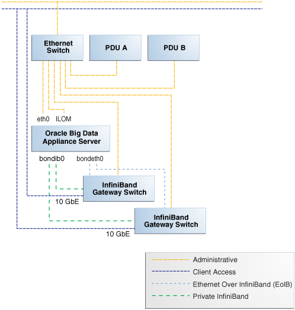
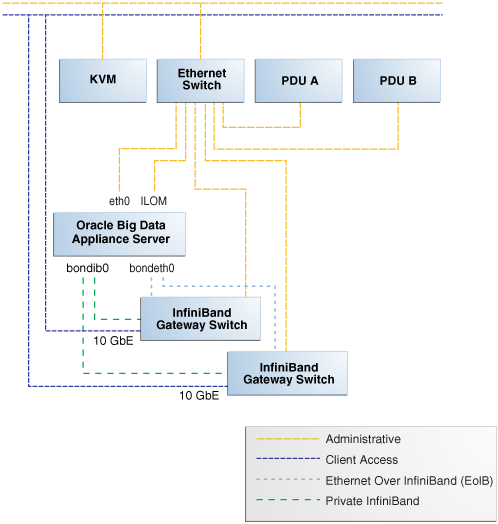

3 Understanding the Network Requirements
This chapter describes the network requirements for Oracle Big Data Appliance. This chapter contains these sections:
- Overview of Network Requirements
- Cabling the Client Network
- Factory Network Settings
- Port Assignments for Oracle Big Data Appliance Software
- Preparing the Network for Oracle Big Data Appliance
Parent topic: Preinstallation
3.1 Overview of Network Requirements
Oracle Big Data Appliance includes a set of racked servers and the equipment to connect the servers to your network. The network connections enable the servers to be administered remotely and enable clients to connect to them. Use the information in this chapter to configure the environment for Oracle Big Data Appliance.
Each X7–2L server has the following network components and interfaces:
-
1 x Dual-port InfiniBand QDR CX3 (40 Gb/sec) PCIe HCA
-
1 x Built-in RJ45 1 Gigabit Ethernet port
X6–2L and earlier servers has the following network components and interfaces:
Parent topic: Understanding the Network Requirements
3.1.1 Default Network Connections
The installation process automatically discovers whether each Sun Network QDR InfiniBand Gateway switch has at least one 10 GbE connection. If they all do, then two virtual network interface cards (VNICs) are configured for each server: one for each switch bonded as bondeth0 in active/passive failover mode. The VNICs are assigned automatically to the available 10 GbE connections in round-robin fashion. For example, if each switch has three available 10 GbE connections, then the VNIC on server 1 is assigned to 10 GbE port 1, server 2 to port 2, server 3 to port 3, server 4 to port 1, and so on.
All VNICs are assigned to the same default virtual local area network (VLAN). To assign different VLANs to different VNICs, you must delete the initial VNICs and manually create your own.
Parent topic: Overview of Network Requirements
3.1.2 Minimum Requirements for the Networks
Additional configuration, such as defining multiple VLANs or enabling routing, may be required for the switch to operate properly in your environment. If additional configuration is needed, then your network administrator must perform the necessary configuration steps during installation of Oracle Big Data Appliance.
To deploy Oracle Big Data Appliance, ensure that your network meets the minimum requirements. Oracle Big Data Appliance uses three networks.
Note:
Each network must be on a distinct and separate subnet from the other networks.
These are the network descriptions:
-
Administrative network: This 1 gigabit Ethernet (GbE) network connects to your existing administrative network and is used to administer all components of Oracle Big Data Appliance. It connects the servers, Oracle ILOM, and InfiniBand switches connected to the Ethernet switch in the rack. This network is also called the management network.
There are two uplinks to the administrative network:
-
From the Ethernet switch in the rack
-
From the KVM switch in the rack (Sun Fire X4270 M2-based racks only)
Each server has two network interfaces for administration. One provides administrative access to the operating system through the eth0 Ethernet interface, and the other provides access to the Integrated Lights Out Manager through the Oracle ILOM Ethernet interface. Oracle Big Data Appliance is delivered with the eth0 and ILOM interfaces connected to the Ethernet switch on the rack. Do not use the eth0 interface on the servers for client network traffic. Cabling or configuration changes to these interfaces are not permitted.
Domain Name System (DNS) servers are not required on the administrative network, although Oracle Big Data Appliance uses them if they are available. At least one Network Time Protocol (NTP) server must also be available. The NTP server for the administrative network can be different from the NTP server for the client network.
All Oracle Big Data Appliance components on the administrative network must be on the same subnet; that is, the eth0 IP addresses for all servers, ILOMs, PDUs, InfiniBand switches, and the Cisco Ethernet switch must be on the same subnet.
-
-
Client access network: This 10 GbE network connects the servers though the gateway switches to your existing client network and is used for client access to the servers. Client applications access the software through this network by using the client network host names of the servers.
There are two Sun Network QDR InfiniBand Gateway switches in the rack. Each switch supports 1 to 8 connections for client access for a total of up to 16 client network connections. For failover, you must have at least one connection from each switch and scale up according to your requirements for loading data and providing client access.
At least one DNS server must be accessible on the client network. At least one NTP server must also be available. The NTP server for the client network can be different from the NTP server for the administrative network.
-
InfiniBand private network: This network connects the servers by using the InfiniBand switches on the rack and the bondib0 interface. This nonroutable network is fully contained within Oracle Big Data Appliance and any other Oracle engineered systems that are connected to it with InfiniBand cables. This network does not connect to your existing network. It is automatically configured during installation.
Parent topic: Overview of Network Requirements
3.1.3 Network Diagram
The servers are configured on the network as follows:
-
eth0: Provides access to the operating system using the administrative network. -
bondeth0: Provides access to the server using the client access network. -
ILOM: Provides access to Oracle Integrated Lights Out Manager (ILOM) using the administrative network.
Use the bda-preinstall-checkip.sh script to verify the readiness of the network environment before cabling Oracle Big Data Appliance to the existing network. See "Preparing the Network for Oracle Big Data Appliance."
Figure 3-1 shows the network connections for Oracle Server X5–2L, Sun Server X4-2L, and Sun Server X3-2L-based racks.
Figure 3-1 Network Diagram for Oracle Big Data Appliance X5–2L, X4-2L, X3–2L
Description of "Figure 3-1 Network Diagram for Oracle Big Data Appliance X5–2L, X4-2L, X3–2L"
Figure 3-2 shows the network connections for a Sun Fire X4270 M2 -based rack, which includes a KVM.
Figure 3-2 Network Diagram for Oracle Big Data Appliance (with KVM)
Description of "Figure 3-2 Network Diagram for Oracle Big Data Appliance (with KVM)"
Parent topic: Overview of Network Requirements
3.2 Cabling the Client Network
Each of the two Sun Network QDR InfiniBand Gateway switches in Oracle Big Data Appliance has eight 10 GbE ports. The two switches enable you to create up to 16 10 GbE connections for each rack. You can determine how many connections to create based on the bandwidth needed for the client network. For proper functioning, at least one of the eight ports of each gateway switch must have an active connection to the site's 10 GbE network. Oracle recommends that the two switches have the same number of active 10 GbE connections, so that failover does not result in a loss of available client network bandwidth.
- How the Servers Connect to the Gateway Switches
- Using Splitter Cables for Connecting to the 40 Gbps Physical Ports
- What About Data Centers Without a 10 GbE Infrastructure?
- Guidelines for Connecting to the Gateway Switches
- Configuring Multiple Racks into a Single Hadoop Cluster
Parent topic: Understanding the Network Requirements
3.2.1 How the Servers Connect to the Gateway Switches
Physical Ethernet connections are created only between the site network and the gateway switches. The Oracle Big Data Appliance servers are connected only by InfiniBand to those switches. Each server has two InfiniBand connections, one to each gateway switch, in an active-passive backup mode; only the active InfiniBand connection is used for all InfiniBand traffic to that server. If that connection fails, it immediately fails over to the other connection.
Half of the Oracle Big Data Appliance servers have active connections to one gateway switch, and the other half have active connections to the other gateway switch. Inside Oracle Big Data Appliance, the client network traffic is transported over those InfiniBand connections using the Ethernet over InfiniBand (EoIB) protocol. As a result, each Oracle Big Data Appliance server has two virtual NICs (VNICs) that are bonded in the same active-passive backup mode. Each VNIC is assigned a specific port on the gateway switch. If a switch has only one 10 GbE connection, then all VNICs for that switch point to the same port. If a switch has multiple connections, then the VNICs are spread across those ports in round-robin fashion.
Table 3-1 Server/Gateway Connections Example
| Cluster, Node | Active Link | Backup Link |
|---|---|---|
|
Cluster1, Node1 |
Switch 1, Link 1Foot 1 |
Switch 2, Link 1 |
|
Cluster1, Node2 |
Switch 1, Link 2 |
Switch 2, Link 2 |
|
Cluster1, Node3 |
Switch 2, Link 1 |
Switch 1, Link 1 |
|
Cluster1, Node4 |
Switch 2, Link 2 |
Switch 1, Link 2 |
|
Cluster1, Node5 |
Switch 1, Link 1 |
Switch 2, Link 1 |
|
Cluster2, Node1 |
Switch 1, Link 3 |
Switch 2, Link 3 |
|
Cluster2, Node2 |
Switch 2, Link 3 |
Switch 1, Link 3 |
|
Cluster2, Node3 |
Switch 1, Link 3 |
Switch 2, Link 3 |
|
Cluster2, Node4 |
Switch 2, Link 3 |
Switch 1, Link 3 |
|
Cluster2, Node5 |
Switch 1, Link 3 |
Switch 2, Link 3 |
Footnote 1
All switches in this table are Sun Network QDR InfiniBand Gateway Switches
Depending on the number of 10 GbE connections, the client network traffic for multiple servers can be sent across the same physical 10 GbE connection. The maximum number of connections provides 160 gigabits per second (Gbps) of client network bandwidth to Oracle Big Data Appliance.
Parent topic: Cabling the Client Network
3.2.2 Using Splitter Cables for Connecting to the 40 Gbps Physical Ports
Although you can create up to eight 10 GbE connections for each gateway switch, its physical ports are 40 Gbps quad small form-factor pluggable (QSFP) ports. Each gateway switch has two of these physical ports reserved for 10 GbE connectivity. The ports are equipped with QSFP transceivers that take an optical cable with an MTP/MPO connector. On the site network side are typically 10 Gbps ports with SFP+ transceivers that take LC connectors. For these connections, you can use splitter cables that have a single male MTP/MPO connector on one end and four pairs of LC connectors on the other end. Each 10 Gbps SFP+ transceiver takes a duplex LC connector for a total of four pairs. Thus, you can use a single splitter cable to create up to four 10 GbE connections. However, all four duplex LC connectors do not require a connection to the site network.
The splitter cables are not provided with Oracle Big Data Appliance and must be ordered separately from Oracle. They are available in lengths of 10, 20, and 50 meters. Oracle recommends that you order the SFP+ transceivers used at the site end of the 10 GbE network from the same manufacturer as the 10 GbE switch.
Parent topic: Cabling the Client Network
3.2.3 What About Data Centers Without a 10 GbE Infrastructure?
If your data center does not have a 10 GbE infrastructure, you can still connect Oracle Big Data Appliance to it by using an external switch that supports both 10 GbE (or 40 GbE) and 1 GbE. The Sun Network 10 GbE Switch 72p and numerous third-party switches provide this capability. You can connect the Sun Network QDR InfiniBand Gateway switches to a 10 GbE or 40 GbE port and connect the data center to a 1 GbE port in the external switch.
Parent topic: Cabling the Client Network
3.2.4 Guidelines for Connecting to the Gateway Switches
Oracle recommends that you follow these guidelines for making 10 GbE connections to the two gateway switches in Oracle Big Data Appliance:
-
Make the same number of 10 GbE connections to both gateway switches.
-
To make 1 to 4 10-GbE connections to each switch, use a single QSFP splitter cable to the 0A-ETH port of both switches.
-
To make 5 to 8 10-GbE connections to each switch, use two QSFP splitter cables to both 0A-ETH and 1A-ETH ports of both switches. Divide the connections as evenly as possible between the 2 splitter cables.
-
To make multiple 10 GbE connections to a single QSFP splitter cable, start with the lowest number port and work upward. For example, for two connections, use 0A-ETH1 and 0A-ETH2.
-
Make the10 GbE connections to the same ports on both NM2-GW switches. If you make connections to 0A-ETH1 and 0A-ETH2 on one switch, then make connections only to 0A-ETH1 and 0A-ETH2 on the other switch.
- Configuring for LACP/LAG Connections
A Link Aggregation Group (LAG) bonds two or more Ethernet connections together for increased uplink speed and greater resiliency.
Parent topic: Cabling the Client Network
3.2.4.1 Configuring for LACP/LAG Connections
A Link Aggregation Group (LAG) bonds two or more Ethernet connections together for increased uplink speed and greater resiliency.
When you pre-configure the networking for a cluster in the Oracle Big Data Appliance Configuration Utility, you can define a LAG by clicking the Use LACP/LAG checkbox and then selecting the connectors to include in the LAG. The network scripts will create a LAG on every switch, one will be active and one passive. For example, if you select 0A-ETH-1 and 0A-ETH-2 in the configuration utility, then when you run the network setup scripts in this case, two LAGs are configured: 0A-ETH-1 + 0A-ETH-2 (active) on leaf switch 1 and 0A-ETH-1 + 0A-ETH-2 (passive) on leaf switch 2. The external switch in this configuration must provide one logical connection per InfiniBand switch.
LAG implementation includes following constraints:
-
A connector cannot belong to more than one LAG.
-
A connector in a LAG cannot be used in a VLAN or VNIC. You can assign a VLAN ID to the LAG, but you cannot reuse the ports in the LAG for VNICs in another network. Therefore, if you create additional client networks you should avoid the ports already used in the LAG.
-
A LAG across switches is not supported
-
A LAG can service only one rack.
-
Within a rack, a LAG may be shared by multiple clusters that occupy the same rack.
Although LAG-related configuration changes to the cluster and the InfiniBand switches are done automatically when you run the network setup scripts generated by the configuration utility, these scripts do not reconfigure the external switches. You must manually enable LAG mode on external switches connected to the InfiniBand switch.
Note:
If you set up LAGs in the configuration utility, then configure external switches to enable LAG before running the network setup scripts that are generated by the configuration utility.
Make sure that the external switch configuration matches the set up that you specify in the configuration utility.
When you run the network setup scripts on each node, be sure that connectors selected for the LAG are not actively in use, otherwise the LAG creation will fail.
The steps required to enable LAN will differ for various Ethernet switch models, and datacenter configurations. The example below shows how to use 802.3ad-based LACP on a Cisco 4948 switch. Refer to the product documentation provided with your own switch for the equivalent steps.
The example uses VLAN ID 1 and 2 and assumes that Cisco ports 1/4 and 1/5 are connected to InfiniBand switch 10GbE uplink ports 1A-ETH-1 and 1A-ETH-2, respectively.
Example 3-1 LAG Configuration for External Cisco 4948 Ethernet Switch Connections to InfiniBand
The first set of commands in the example must be run in the order provided for Cisco ports 1/4 and 1/5, which are connected to the InfiniBand switch.
switchport
switchport trunk encapsulation dot1q
switchport trunk allowed vlan 1,2
switchport mode trunk
no shutdown
channel-group 3 mode active
Below are commands you need to run in the order shown for Cisco Port-Chan 3.
switchport
switchport trunk encapsulation dot1q
switchport trunk allowed vlan 1,2
switchport mode trunk
Parent topic: Guidelines for Connecting to the Gateway Switches
3.2.5 Configuring Multiple Racks into a Single Hadoop Cluster
When multiple Oracle Big Data Appliance racks are connected to form a single Hadoop cluster, Oracle strongly recommends that you spread the 10 GbE connections across the switches in different racks. Every gateway switch in every rack must have at least one 10 GbE connection. Oracle does not support a configuration in which the 10 GbE connections to the switches in a single rack are used for all servers in all Oracle Big Data Appliance racks.
Parent topic: Cabling the Client Network
3.3 Factory Network Settings
This initial network configuration is set at the factory for Oracle Big Data Appliance:
-
Gateway: 192.168.1.254 in all devices as required
-
Subnet Mask: 255.255.255.0 in all devices as required
-
IP Address Range: 192.168.1.1 to 192.168.1.211
Table 3-2 lists the default IP addresses for Oracle Big Data Appliance.
Table 3-2 Default IP Addresses for Oracle Big Data Appliance
| Host | Administrative IP Addresses | Oracle ILOM IP Addresses | InfiniBand Bonded IP Addresses |
|---|---|---|---|
|
bda18Foot 2 |
|
|
|
|
bda17Footref 2 |
|
|
|
|
bda16Footref 2 |
|
|
|
|
bda15Footref 2 |
|
|
|
|
bda14Footref 2 |
|
|
|
|
bda13Footref 2 |
|
|
|
|
bda12Foot 3 |
|
|
|
|
bda11Footref 3 |
|
|
|
|
bda10Footref 3 |
|
|
|
|
bdasw-ib3 |
|
||
|
Cisco Switch |
|
||
|
bdasw-ib2 |
|
||
|
bda9Footref 3 |
|
|
|
|
bda8Footref 3 |
|
|
|
|
bda7Footref 3 |
|
|
|
|
bda6 |
|
|
|
|
bda5 |
|
|
|
|
bda4 |
|
|
|
|
bda3 |
|
|
|
|
bda2 |
|
|
|
|
bda1 |
|
|
|
|
bdasw-ib1 |
|
||
|
PDU A |
|
||
|
PDU B |
|
Footnote 2
Full racks only
Footnote 3
Full racks or starter racks with additional servers only
Parent topic: Understanding the Network Requirements
3.4 Port Assignments for Oracle Big Data Appliance Software
Table 3-3 identifies the port numbers used by Oracle Big Data Appliance software.
For port numbers used by Cloudera CDH, CM, and other Cloudera products, see the Cloudera documentation library.
Table 3-3 Oracle Big Data Appliance Port Numbers
| Port | Used by |
|---|---|
|
22 |
ssh |
|
80 |
yumrepos (only during installation) |
|
111 |
portmap |
|
162 |
|
|
443 |
Auto Service Request Manager (optional) |
|
668 |
rpc.statd |
|
3306 |
MySQL Database |
|
5000 |
Oracle NoSQL Database registration |
|
5001 |
Oracle NoSQL Database administration |
|
5010 to 5020 |
Oracle NoSQL Database processes |
|
5042 |
Oracle Big Data SQL |
|
6481 |
Auto Service Request Manager service tags listener (optional) |
|
8139 |
Puppet nodes |
|
8140 |
Puppet parent |
|
20910 |
Oracle Data Integrator agent |
|
30920 |
Automated Service Monitor (ASM) |
Table 3-4 identifies the port numbers used by Oracle Big Data Discovery software.
Note:
The port assignments described in Table 3-4 exist only on the 5th node of the primary cluster and only when Oracle Big Data Discovery is installed.Table 3-4 Oracle Big Data Discovery Port Numbers
| Port | Service | Configuration Property Name |
|---|---|---|
|
7001 |
WebLogic |
ADMIN_SERVER_PORT |
|
7002 |
WebLogic |
ADMIN_SERVER_SECURE_PORT |
|
7003 |
WebLogic |
MANAGED_SERVER_PORT |
|
7004 |
WebLogic |
MANAGED_SERVER_SECURE_PORT |
|
7010 |
Dgraph |
DGRAPH_WS_PORT |
|
7019 |
Dgraph |
DGRAPH_BULKLOAD_PORT |
|
7101 |
Dgraph |
AGENT_EXPORT_PORT |
|
7102 |
Dgraph |
AGENT_PORT |
The following table describes Oracle Big Data Appliance port access required by the Oracle Management Service (OMS) and Management Agent in order to use the Oracle Enterprise Manager plug-in.
Table 3-5 Port Access Required by the Oracle Enterprise Manager Plug-In
| Port Number | On Which Node | Use |
|---|---|---|
| 7183 | Cloudera Manager Server host. | For discovery , if HTTPS access is enabled on Cloudera Manager. |
| 7180 | Cloudera Manager Server host. | For discovery and monitoring, if HTTPS access is not enabled on Cloudera Manager. |
| 7187 | Cloudera Manager Server host. | For monitoring, if HTTPS access is enabled on Cloudera Manager. |
| 22 | All nodes | SSH for bdacli execution during discovery. |
Parent topic: Understanding the Network Requirements
3.5 Preparing the Network for Oracle Big Data Appliance
Oracle Big Data Appliance Configuration Generation Utility generates these files for you to use before installation:
-
bda-install-review.html: Lists the host names and custom IP addresses for Oracle Big Data Appliance. Verify that the information is correct, and add the host names and IP addresses to a name server on the network. You can view this file in a browser.
-
bda-preinstall-checkip.sh: Performs validation checks on network configuration values, including host names and IP addresses.
See "Generating the Configuration Files."
Run the bda-preinstall-checkip.sh script at these points in the installation process:
-
Before Oracle Big Data Appliance arrives at the site but after the network administrator has added the new names and IP addresses to the name server. This step ensures that the network configuration parameters are valid and the network is ready to accept Oracle Big Data Appliance connections.
-
After Oracle Big Data Appliance arrives but before it is connected to the network. This step ensures that the network has not changed and is still ready to accept Oracle Big Data Appliance connections.
Note:
Running bda-preinstall-checkip.sh is a critical pre-installation step. Network errors can cause extensive delays in the installation procedure.
To check the network for conflicts:
-
Copy the
bda-preinstall-checkip.shscript to any Linux system with a 10 GB Ethernet connection to the subnet on which Oracle Big Data Appliance will be deployed. -
Ensure that the script is executable:
chmod +x bda-preinstall-checkip.sh
-
Execute the script:
./bda-preinstall-checkip.sh
-
If the script identifies errors, open the
bda-checkip.outfile for details. It contains information about every test the script performed. The output file is created in the same directory as the script. -
Resolve all reported errors before rerunning the script.
Example 3-2 shows success and error messages from the bda-preinstall-checkip.sh script.
Example 3-2 Output from bda-preinstall-checkip.sh
Big Data Appliance pre-installation network verification starting ... Using name server 198.51.100.21 for all DNS lookups Domain is example.com Processing DNS name servers : SUCCESS Processing NTP time servers : SUCCESS Processing gateways : SUCCESS Processing factory IP addresses : SUCCESS Processing public node names (bondeth0) : SUCCESS Processing private IP addresses (bondib0) : ERROR - see bda-checkip.out for details Processing admin node names (eth0) : SUCCESS Processing ILOM names : SUCCESS Processing switch and PDU IP addresses : SUCCESS Processing ASR hostname : SUCCESS One or more checks report ERROR. Review bda-checkip.out for details
Parent topic: Understanding the Network Requirements